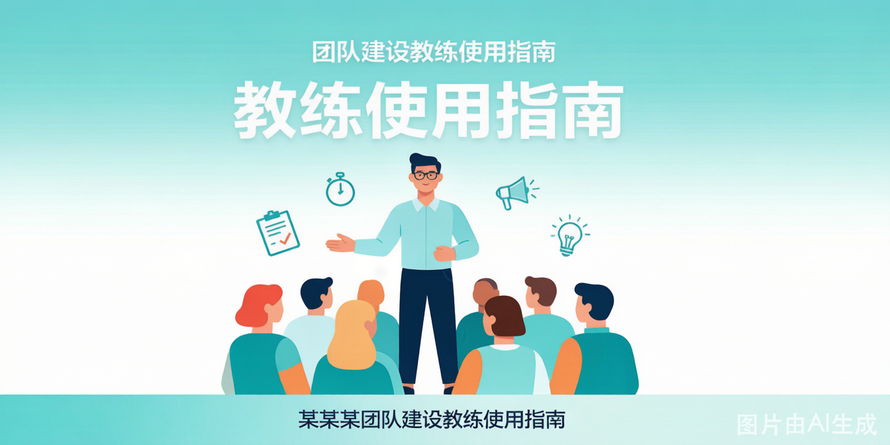
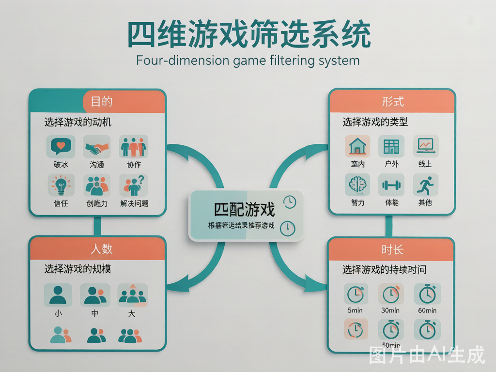
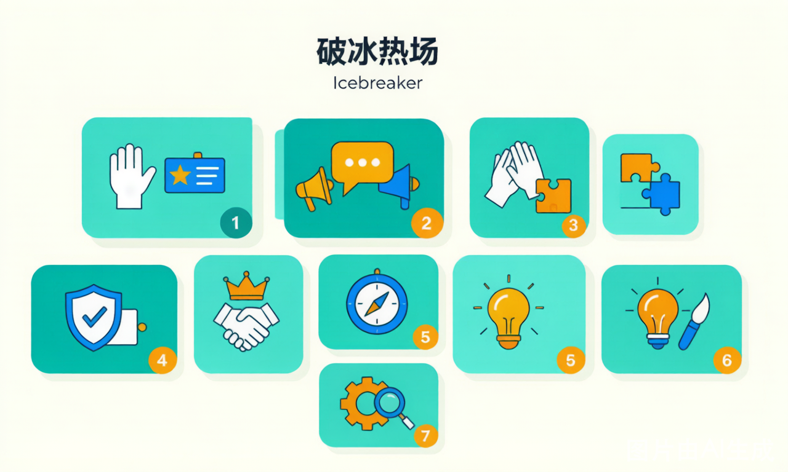
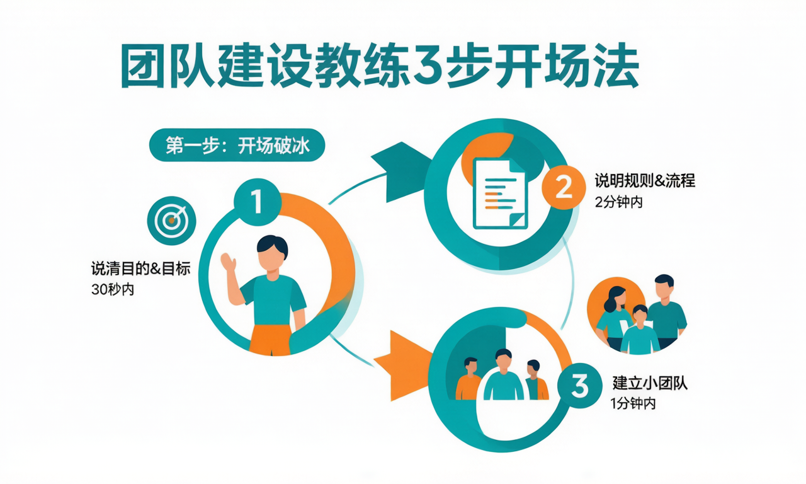
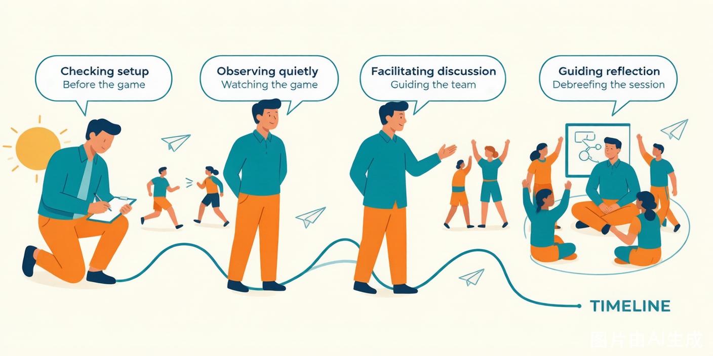
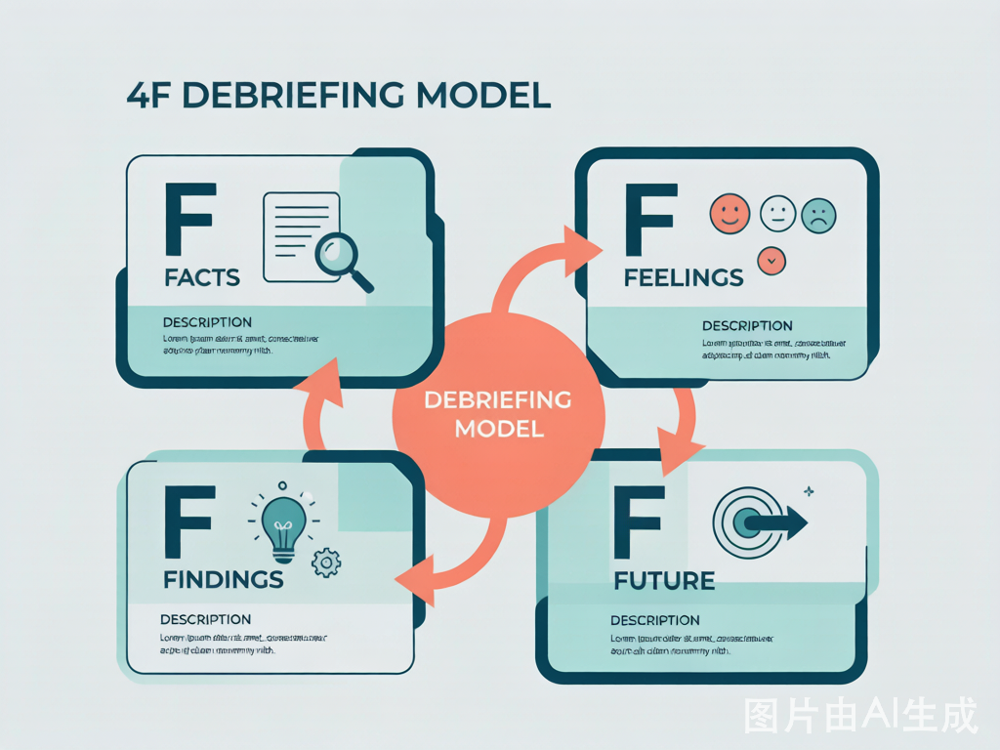

这一页不介绍具体游戏，只解决三件事：怎么选、怎么带、怎么收。具体规则都在游戏详情页里。
一、怎么选游戏
选游戏不是「找一个好玩的」，而是用四个条件把 101 款砍到 3 款。按这个顺序问自己：
| 维度 | 你要先知道什么 | 为什么排在最前面 |
|---|---|---|
| 时长 | 这段活动你实际有多少分钟 | 时长不够，再好的游戏也只剩半截；多数翻车都是超时 |
| 人数 | 全场多少人，能分几组 | 决定是「全员一起」还是「多组并行」 |
| 场地 | 室内 / 户外 / 线上，有没有桌椅 | 决定能不能跑动、能不能蒙眼、会不会吵到别人 |
| 目标 | 这次想解决什么（破冰？协作？复盘？） | 决定选哪个分类，也决定复盘往哪儿问 |

回答完这四个问题，去首页筛选：搜索框下面的「人数」「时长」两行是常驻的，场地和能力收在「更多筛选」里。选完剩下的卡片，就是你的候选池。

选游戏的三条原则
- 时间宁短勿长：留 20% 缓冲，别把流程排满。一场 3 小时的活动，实际有效时间通常只有 2 小时 20 分。
- 人数宁少勿多：大组一定要拆成多个小组并行。30 人挤在一个游戏里，一定有 10 个人在玩手机。
- 难度宁浅勿深：规则能在 2 分钟内讲清楚最好。讲规则超过 3 分钟，参与者的耐心就已经用掉一半了。
一个具体的例子
周五下午，30 人，公司会议室，想让最近有点闷的团队松一松。
- 时长：3 小时（实际可用 2.5 小时）
- 人数：30 人 → 分 5 组，每组 6 人
- 场地：室内会议室，桌椅可以挪开，但不能跑跳、不能吵闹
- 目标：破冰 + 轻协作，不挖深情绪
筛选结果：破冰类选人类宾果（15 min，零道具，全员走动），协作类选齐眉棍（20 min，站着就能做，安静）或画图接龙（25 min，坐着也能做），收尾用4F 复盘（20 min）。
完整排法可以直接抄半日团建模板。
二、怎么带游戏
开场三步法

第一步：说目的（30 秒）
「今天我们玩这个游戏，是想让大家体验一下______。」
先说价值，再讲规则。参与者知道「为什么要玩」，投入度会明显不一样。填空处直接抄游戏详情页里的「团建核心价值」。
第二步：讲规则（2 分钟）
- 只讲核心规则。变体、细节、特殊情况，等第一轮结束后再补。
- 一定要示范：找两个人当场演一遍，比说十句管用。
- 讲完不要问「大家听懂了吗」——所有人都会点头。改成：「小王，你说一下你等会儿要做什么。」
第三步：定分组（1 分钟）
- 提前想好分组方式，别在现场数人头。五种常用分组法见物资与效率。
- 有意识地打散：同部门的人坐一起会互相掩护，跨部门混编才有信息流动。
- 宣布开始后，教练立刻退后。你站在圈子中间，游戏就变成了「你的课」。
游戏进行中，教练在做什么

| 阶段 | 教练在做什么 | 最容易犯的错 |
|---|---|---|
| 开始前 | 检查场地安全、道具就位、分组完成 | 忙着招呼人，忘了看地面滑不滑 |
| 规则讲解 | 说目的、讲规则、做示范、确认理解 | 讲太多变体，把参与者讲晕 |
| 第一轮进行 | 退后观察，记录关键时刻（谁在指挥、谁在沉默） | 忍不住出声指导 |
| 卡住 / 混乱时 | 判断是「有价值的挣扎」还是「无意义的混乱」 | 太早介入，把最有价值的素材填掉了 |
| 即将结束时 | 提前 2 分钟预警，让团队有时间收尾 | 突然喊停，情绪断在半空 |
| 结束后 | 立刻进入复盘，趁情绪还在 | 先休息 10 分钟，回来什么都不剩了 |
一条判断标准：如果团队在努力但没成功，别管；如果团队在等你说下一步，该介入了。
三种常见现场状况
| 状况 | 怎么处理 |
|---|---|
| 全场冷场，没人说话 | 不要催。先自己下場参与一轮，或者点名问一个具体的人一个具体的问题（「你觉得第一步该干什么」），不要问「大家有什么想法」 |
| 一个人全程指挥，别人不听 | 不介入。记住这个人，复盘时问「刚才谁在指挥？他的话为什么没被采纳？」——这一问比现场纠正有效十倍 |
| 有人明显不在状态（玩手机、站角落） | 走过去，给一个具体的小任务（「你帮我看时间」「你负责记录」），不要问「你怎么不玩」 |
更多话术见引导话术库。
三、怎么复盘
复盘不是总结。 总结是「今天我们学到了团队合作很重要」，复盘是「刚才第 12 分钟，你为什么没有把那块板子换给第三组」。
4F 模型

| 层次 | 问什么 | 典型问句 |
|---|---|---|
| Facts（事实） | 刚才到底发生了什么 | 「你们组做了什么？没做什么？」 |
| Feelings（感受） | 当时什么感觉 | 「那一刻你是什么感受？紧张？兴奋？沮丧？」 |
| Findings（发现） | 学到了什么 | 「这和工作中的什么情况相似？」 |
| Future（行动） | 接下来做什么不同的事 | 「回到工作，你会做一件什么不同的事？」 |
顺序不能乱。 跳过 Feelings 直接问 Findings，得到的一定是场面话。
复盘话术模板
开场（30 秒）：
「我们先不评价做得对不对。先花两分钟，把刚才发生的事捋一遍——你们组做了什么，卡在哪儿，谁做了什么。」
Feelings（感受）：
「球掉的那一刻，你脑子里第一句话是什么？」
「有人一直指挥但没人听的时候，你是什么感受？」
「最后成功那一下，你是松了一口气，还是有点意外？」
Findings（发现）：
「如果重来一次，你们会在前 5 分钟做什么不同的事？」
「这个游戏和你们上周那个项目，有什么相似的地方？」
「刚才谁说的话其实是对的，但当时没人听？」
Future（行动）：
「回到工作，接下来一个月你会做一件什么不一样的事？具体到跟谁、在什么场合、说什么话。」
不合格的回答是「我要多沟通」。这时候追一句：「跟谁？在哪个会上？第一句话说什么？」
复盘时间给多少
| 活动时长 | 复盘时长 | 说明 |
|---|---|---|
| 15 min 以内 | 5 min | 只做 Feelings + Findings，别硬凑四层 |
| 20–40 min | 10–15 min | 完整 4F，但 Findings 多给一点时间 |
| 40 min 以上 | 20–30 min | 4F + 全体分享，教练可以写白板 |
| 半天及以上 | 30–45 min | 加一轮「每人一句行动承诺」 |
详细的提问清单、四种常见卡点怎么破，见复盘引导框架。
四、常见场景怎么排
不知道从哪儿开始时，直接抄这些组合：
场景
推荐排法
新员工入职培训 · 破冰
破冰游戏（15 min）→ 协作游戏（30 min）→ 复盘（10 min）
管理层领导力工作坊
领导力游戏（45 min）→ 深度复盘（30 min）→ 行动承诺（15 min）
销售团队激励团建
热身（10 min）→ 合作游戏（40 min）→ 减压游戏（20 min）→ 复盘（15 min）
跨部门协作（部门墙明显）
见跨部门协作方案，半天，必须打散重组
新人第一个月融入
见新人融入方案，2–3 小时，重点是「被记住」
线上远程团队凝聚
线上破冰（15 min）→ 线上协作游戏（30 min）→ 线上复盘（10 min），见线上团建模板
全天团建活动
破冰（30 min）→ 主体活动 ×2（各 60 min）→ 午餐 → 大型合作挑战（90 min）→ 复盘总结（30 min），见一日团建模板
五、给新手教练的五条建议
- 第一次带某个游戏，自己先玩一遍。 找两三个同事试跑，你会发现规则里有一半的坑是文字看不出来的。
- 准备 Plan B。 冷场、超时、道具坏了、有人受伤——每个都要有替换方案，写在流程卡的背面。
- 控制自己的表达欲。 说得越多，参与者的体验越少。教练的最高境界是「在场但不占场」。
- 每次带完写三行复盘。 哪个环节超时了？哪句话让全场安静了？下次改什么？攒十次，你就有自己的经验库了。
- 提前跟客户确认三件事：人数会不会变、有没有人不能参与体力活动、场地能不能挪桌椅。这三件事任何一件变了，流程都要重排。
六、下一步
_最后更新：2026-11-02_